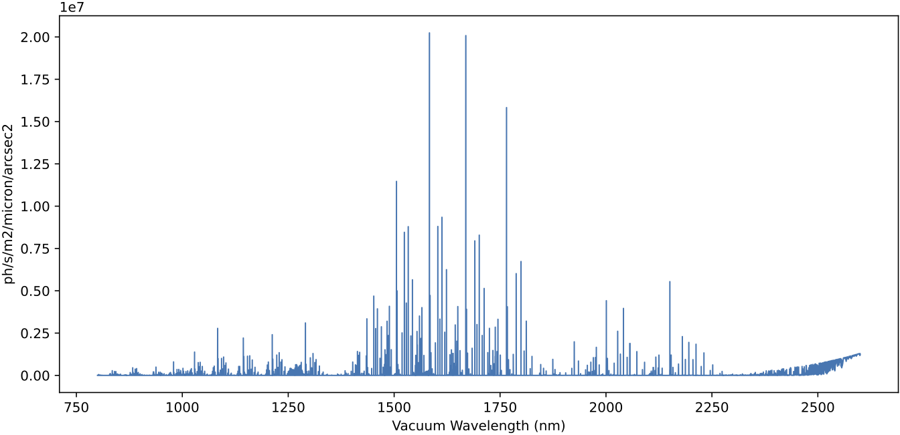

The scene YAML file
As already introduced in The scene file of the initial example, the scene is an auxiliary external YAML file that contains a description of the sources and associated spectra to be simulated.
YAML is a human-friendly data serialization language that can be easily generated and modified with any text editor. See YAML Syntax description for more information.
Warning
Basic rules of YAML files:
Indentation matters and plays an important part in structuring the data.
The number of spaces doesn’t matter, as long as the child node indentation is greater that its parent. In any case, it is a good practice to keep the same number of spaces to define the indentation level.
Never use tabs outside of quoted strings, especially for indentation. The tab character is illegal within YAML files.
YAML is case sensitive.
YAML’s comments start with a
#and go until the end of the line.
The scene file may contain several sources, each one separated by a line
containing --- (the end of directives marker in YAML). For each object, a
first level of keys must be specified:
scene_block_name, spectrum, geometry, nphotons,
wavelength_sampling, apply_seeing, apply_atmosphere_transmission
and render.
Here’s a skeleton of a YAML scene file containing several sources (note that
... indicates lines to be filled in; see explanation below):
scene_block_name: <string> # mandatory
spectrum: # mandatory
type: <string>
...
...
geometry: # mandatory
...
...
nphotons: <number> # mandatory
wavelength_sampling: <random | fixed> # default: random
apply_seeing: <True | False> # default: True
apply_atmosphere_transmission: <True | False> # default: True
render: <True | False> # default: True
---
scene_block_name: <string> # mandatory
spectrum: # mandatory
type: <string>
...
...
geometry: # mandatory
...
...
nphotons: <number> # mandatory
wavelength_sampling: <random | fixed> # default: random
apply_seeing: <True | False> # default: True
apply_atmosphere_transmission: <True | False> # default: True
render: <True | False> # default: True
---
...
...
The following provides a detailed description of the different sections that make up each block in a scene.
scene_block_name
The value of this first-level key is a user-defined text string. Its value has no numerical effect on the execution of the simulator, but it allows the user to see which astronomical source is being simulated at any given time in the terminal. This is useful when the scene to be simulated contains multiple sources. Ideally, the text string should not be repeated in different blocks, although this has no impact.
This key is mandatory (it has no default value).
spectrum
This first-level key opens an indented section that contains all the information required to define the kind of spectrum to be associated to the geometry described below.
This key is mandatory (it has no default value).
The following tabs show the different options available. In each case, a general description and an example are provided.
General description
Note: The order of the different key: value pairs within the
spectrum level is not relevant.
spectrum:
type: constant-flux
wave_min: <float> # optional (default value: null)
wave_max: <float> # optional (default value: null)
wave_unit: <unit> # optional (default value: m)
Simulate spectrum with constant flux (in PHOTLAM units). This is the type of spectrum that we simulated in The scene file of the initial example.
If wave_unit is not specified, the default FRIDA wave_unit is
assumed (meter, which is the basic irreducible unit adopted in
astropy). Otherwise, a valid astropy unit should be employed. Valid
options are angstrom, nm, etc.
Both wave_min and wave_max are optional. If they are not
specified, the minimum and maximum wavelengths covered by the adopted
grating are used.
Example
Unless there is a specific need to use one of the optional parameters, in most cases it is sufficient to use:
spectrum:
type: constant-flux
General description
Note: The order of the different key: value pairs within the
spectrum level is not relevant.
spectrum:
type: skycalc-radiance
wave_min: <float> # optional (default value: null)
wave_max: <float> # optional (default value: null)
wave_unit: <unit> # optional (default value: m)
This options simulates a spectrum that makes use of the predicted sky
radiance (sky emission lines) obtained with SKYCALC Sky Model Calculator
(version 2.0.9) using the default input parameters for the model. The
prediction is stored in the file skycalc_800-2600nm_step0_01nm.fits,
which is one of the auxiliary files automatically downloaded in a cache
directory the first time fridadrp-ifu_simulator is executed.
A plot of the sky radiance prediction is shown below.
{kind=link}
Both wave_min and wave_max are optional. If they are not
specified, the minimum and maximum wavelengths covered by the adopted
grating are used. If any of these parameters are used,
it is also advisable to specify wave_unit.
Example
Unless there is a specific need to use one of the optional parameters, in most cases it is sufficient to use:
spectrum:
type: skycalc-radiance
General description
Note: The order of the different key: value pairs within the
spectrum level is not relevant.
spectrum:
type: tabulated-spectrum
filename: <string> # mandatory
wave_column: <integer> # mandatory
flux_column: <integer> # mandatory
flux_type: <string> # mandatory (options: flam or photlam)
wave_min: <float> # optional (default value: null)
wave_max: <float> # optional (default value: null)
wave_unit: <unit> # optional (default value: m)
redshift: <float> # optional (default 0.0)
convolve_sigma_km_s: <float> # optional (default 0.0)
This option allows to simulate a spectrum whose flux is tabulated in the
external ASCII file given in filename, where the wavelength and flux
are in different columns of the file (wave_column and
flux_column, respectively). The file must be accessible from the
directory where the simulator is running (a relative path to that
directory can be specified). In the simulation, the flux is evaluated
using a simple linear interpolation of the tabulated data.
In this case, it is important to specify wave_unit (otherwise the
default value will be assumed, which may not correspond to the units
employed in the tabulated data).
It is possible to specify a redshift value to be applied to the tabulated
wavelengths. In addition, it is also possible to convolve the spectrum
using a Gaussian kernel with a standard deviation given by the
convolve_sigma_km_s value (in km/s).
Both wave_min and wave_max are optional. If they are not
specified, the minimum and maximum wavelengths covered by the adopted
grating are used.
Example
spectrum:
type: tabulated-spectrum
filename: T06000G45P00.DAT
wave_column: 1
flux_column: 2
flux_type: flam
wave_unit: angstrom
General description
Note: The order of the different key: value pairs within the
spectrum level is not relevant.
spectrum:
type: delta-lines
filename: <string> # mandatory
wave_column: <integer> # mandatory
flux_column: <integer> # mandatory
wave_min: <float> # optional (default value: null)
wave_max: <float> # optional (default value: null)
wave_unit: <unit> # optional (default value: m)
This option is designed to simulate a spectrum formed by infinitely narrow emission lines (e.g., an arc spectrum). Note that although it is assumed that the lines have no spectral width, the use of a seeing value will broaden the observed profile of the lines in the spectral direction.
In this case, it is important to specify wave_unit (otherwise the
default value will be assumed, which may not correspond to the units
employed in the tabulated data).
Both wave_min and wave_max are optional. If they are not
specified, the minimum and maximum wavelengths covered by the adopted
grating are used.
Example
spectrum:
type: delta-lines
filename: lines_argon_neon_xenon_empirical_EMIR.dat
wave_column: 1
flux_column: 2
wave_unit: angstrom
geometry
This first-level key opens an indented section that indicates how the photons generated following the previous spectrum type are going to be distributed in the IFU field of view.
This key is mandatory (it has no default value).
The following tabs show the different options available. In each case, a general description and an example are provided.
General description
geometry:
type: flatfield
This option redistributes the photons homogeneously over the entire field of view of the IFU. It is the appropriate procedure to generate, for example, the contribution of sky emission.
Example
This case is very simple. There are no additional parameters.
geometry:
type: flatfield
Note: The order of the different key: value pairs within the
geometry level is not relevant.
General description
geometry:
type: point-like
ra_deg: <float> # optional (default value: 0.0)
dec_deg: <float> # optional (default value: 0.0)
delta_ra_arcsec: <float> # optional (default value: 0.0)
delta_dec_arcsec: <float> # optional (default value: 0.0)
All the photons are initially placed at the same point of the field of
view. The corresponding coordinates can be modified using ra_deg and
dec_deg (right ascension and declination, in decimal degrees). In
addition, it is also possible to include additional coordinate offsets
using delta_ra_arcsec and delta_dec_arcsec (in arcseconds). It is
important to remember that the coordinates at the center of the IFU field
of view are the ones stablished by the script arguments ra_teles,
dec_teles, delta_ra_teles_arcsec, and delta_dec_teles_arcsec. By default, all of the script arguments are set
to zero.
In general, the simplest thing to do is to use the script arguments to set the reference position and use the scene parameters to relocate different sources as part of the same simulation.
Even though the initial coordinates of all photons are the same, the final positions will be modified when the seeing effect is introduced.
Example
To simulate a point source at the center of the IFU’s field of view, simply use the following (assuming that we have left the default values of the script arguments that modify the telescope pointing):
geometry:
type: point-like
Note: The order of the different key: value pairs within the
geometry level is not relevant.
General description
geometry:
type: gaussian
fwhm_ra_arcsec: <float> # mandatory
fwhm_dec_arcsec: <float> # optional (default value: fwhm_ra_arcsec)
position_angle_deg: <float> # optional (default value: 0.0)
ra_deg: <float> # optional (default value: 0.0)
dec_deg: <float> # optional (default value: 0.0)
delta_ra_arcsec: <float> # optional (default value: 0.0)
delta_dec_arcsec: <float> # optional (default value: 0.0)
This option redistributes the photons spatially in the IFU’s focal plane
following a two-dimensional Gaussian probability distribution, whose
parameters are fwhm_ra_arcsec, fwhm_dec_arcsec, and
position_angle_deg.
If the value of fwhm_dec_arcsec is not specified, the same value as
fwhm_ar_arcsec is assumed.
The position of the object in the field of view is determined by the same
parameters as in the geometry: point-like case previously
described.
Example
To simulate a symmetric Gaussian source at the center of the IFU’s field of view with a FWHM of 0.05 arcsec, simply use the following (assuming that we have left the default values of the script arguments that modify the telescope pointing):
geometry:
type: gaussian
fwhm_ra_arcsec: 0.05
Note: The order of the different key: value pairs within the
geometry level is not relevant.
General description
geometry:
type: from-FITS-image
filename: <string> # mandatory
diagonal_fov_arcsec: <float> # mandatory
background_to_subtract: <string | float> # mandatory (options for string: mode, median, none; or float number)
ra_deg: <float> # optional (default value: 0.0)
dec_deg: <float> # optional (default value: 0.0)
delta_ra_arcsec: <float> # optional (default value: 0.0)
delta_dec_arcsec: <float> # optional (default value: 0.0)
This option allows the photons to be redistributed in the IFU’s focal
plane using an arbitrary FITS image as a probability distribution. This
makes it easy to simulate objects with an arbitrary geometry. The
diagonal_fov_arcsec parameter sets the size of the FITS image in the
diagonal direction, in arcseconds. The position of the center of the
image is fixed by the same parameters as in the geometry: point-like
case previously described.
Example
To simulate a galaxy like M51 at the center of the IFU’s field of view, simply use the following (assuming that we have left the default values of the script arguments that modify the telescope pointing):
geometry:
type: from-FITS-image
filename: m51_dss1.fits
diagonal_fov_arcsec: 0.80
background_to_subtract: mode
In this case, the file m51_dss1.fits is the FITS file downloaded from
the ESO Online Digitized Sky Survey
selecting Object Name: M51 with a field of view of \(15 \times
15\;{\rm arcmin}^2\). The image mode is subtracted and the resulting
pixels with negative signal are set to zero in order to use the result as
a valid probability distribution function. The size of the FITS image in
the diagonal direction is reduced so that it occupies an extent of 0.80
arcseconds in the IFU’s focal plane.
nphotons
The value of this first-level key indicates the initial number of photons to be simulated.
If atmospheric transmission is considered in the simulation, a fraction of the simulated photons will not reach the detector. This means that the final number of simulated photons that reach the detector will be less than this initial number.
Additionally, seeing can cause simulated photons on the edges of the IFU’s field of view to fall outside the IFU when this effect is taken into account, which means that the final number of photons reaching the detector may be even smaller.
This key is mandatory (it has no default value).
wavelength_sampling
Method employed to assing the wavelength to each simulated photon. Two methods have been implemented:
random: the simulated wavelengths are assigned by randomly sampling the cumulative distribution function of the simulated spectrum. This method mimics the Poissonian arrival of photons. This should be the default value.fixed: the simulated wavelengths are assigned by uniformly sampling the cumulative distribution function of the simulated spectrum (i.e., avoding the Poissonian noise). This last method should provide a perfectly constant flux (+/- 1 photon due to rounding) for an object with constant PHOTLAM, when using the parameter--spectral_blurring_pixel 0.
This key is not mandatory (default value: random)
apply_seeing
Boolean first-level key indicating whether seeing must be taken into account.
If True, each simulated photon is randomly displaced in the focal plane of
the IFU according to a probability distribution that is determined by the
seeing PSF.
The script arguments seeing_fwhm_arcsec and
seeing_psf define the
seeing FWHM and the mathematical function employed to reproduce the PSF. Note
that this arguments are ignored for those scene sources for which
apply_seeing: False.
This key is not mandatory (default value: True).
apply_atmosphere_transmission
Boolean first-level key indicating whether the atmosphere transmission must be
considered. If True, the atmosphere transmission defined in the script
argument atmosphere_transmission will be
used.
This key is not mandatory (default value: True).
render
Boolean first-level key indicate whether the considered scene block must be simulated.
It may be useful to set this key to False when we want to simulate images with several sources in the IFU field of view and one needs to remove some particular objects from the simulation without deleting the corresponding lines in the YAML file.
This key is not mandatory (default value: True).